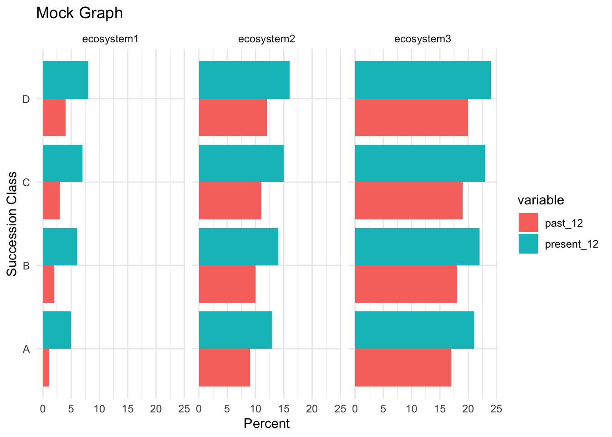

[1] 7 21 22 33 17 0 0 0 0Code Challenge Code
Randy’s comments
- Nice!
- I am not sure it is necessary to convert input data to dataframe-double check this by exploring the inputs after you load
- with this challenge typing out specific code like you did for the unlist was not a big deal, but could be with other datasets. Consider using a loop or a function in the future, or a different approach altogether. I did not test, but I also think this would work and be more concise:
past_percentages <- unname(unlist(past_df[c(1, 3, 2), ]))
- did you print just to explore?
- As I read your code I love it. I am noticing that your method is fairly manual, e.g., finding the value for each ecosystem, and think this probably gave you a chance to really learn what is going on. In the future I would encourage you to think through how to do this with fewer manual steps
- increadible notes and reflections.
** Well done Jaxson!
Past Data
Past for Dry-Mesic
Past for Pine-Bluestem
[1] 15 3 37 43 2 0 0 0 0Past for Pine-Oak
[1] 7 7 23 45 18 0 0 0 0Present Data
Present for Dry-Mesic
[1] 0.530742375 0.006841614 0.728214716 21.612424905 61.905926807
[6] 0.000000000 10.494935704 1.777417935 2.943495945Present for Pine-Bluestem
[1] 0.295048199 0.008241927 1.091448330 23.622927379 48.654489486
[6] 0.000000000 14.418388314 6.335070740 5.574385625Present for Pine-Oak
[1] 0.364236255 0.003616832 1.506006281 30.165782812 43.525892049
[6] 0.000000000 16.160813711 3.140814332 5.132837728Labels
Succession Classes
[1] "A" "B" "C" "D" "E"
[6] "UN" "UE" "Agriculture" "Developed" Test Graph
Data Frame:
| succession_class_12 | variable | value | ecosystem |
|---|---|---|---|
| A | past_12 | 1 | ecosystem1 |
| B | past_12 | 2 | ecosystem1 |
| C | past_12 | 3 | ecosystem1 |
| D | past_12 | 4 | ecosystem1 |
| A | past_12 | 9 | ecosystem2 |
| B | past_12 | 10 | ecosystem2 |
| C | past_12 | 11 | ecosystem2 |
| D | past_12 | 12 | ecosystem2 |
| A | past_12 | 17 | ecosystem3 |
| B | past_12 | 18 | ecosystem3 |
| C | past_12 | 19 | ecosystem3 |
| D | past_12 | 20 | ecosystem3 |
| A | present_12 | 5 | ecosystem1 |
| B | present_12 | 6 | ecosystem1 |
| C | present_12 | 7 | ecosystem1 |
| D | present_12 | 8 | ecosystem1 |
| A | present_12 | 13 | ecosystem2 |
| B | present_12 | 14 | ecosystem2 |
| C | present_12 | 15 | ecosystem2 |
| D | present_12 | 16 | ecosystem2 |
| A | present_12 | 21 | ecosystem3 |
| B | present_12 | 22 | ecosystem3 |
| C | present_12 | 23 | ecosystem3 |
| D | present_12 | 24 | ecosystem3 |

Graph
Data Frame:
| Ecosystem | Succession Class | Time Period | Percent Cover |
|---|---|---|---|
| Ozark-Ouachita Dry-Mesic Oak Forest | A | past | 7.0000000 |
| Ozark-Ouachita Dry-Mesic Oak Forest | B | past | 21.0000000 |
| Ozark-Ouachita Dry-Mesic Oak Forest | C | past | 22.0000000 |
| Ozark-Ouachita Dry-Mesic Oak Forest | D | past | 33.0000000 |
| Ozark-Ouachita Dry-Mesic Oak Forest | E | past | 17.0000000 |
| Ozark-Ouachita Dry-Mesic Oak Forest | UN | past | 0.0000000 |
| Ozark-Ouachita Dry-Mesic Oak Forest | UE | past | 0.0000000 |
| Ozark-Ouachita Dry-Mesic Oak Forest | Agriculture | past | 0.0000000 |
| Ozark-Ouachita Dry-Mesic Oak Forest | Developed | past | 0.0000000 |
| Ozark-Ouachita Shortleaf Pine-Bluestem Woodland | A | past | 15.0000000 |
| Ozark-Ouachita Shortleaf Pine-Bluestem Woodland | B | past | 3.0000000 |
| Ozark-Ouachita Shortleaf Pine-Bluestem Woodland | C | past | 37.0000000 |
| Ozark-Ouachita Shortleaf Pine-Bluestem Woodland | D | past | 43.0000000 |
| Ozark-Ouachita Shortleaf Pine-Bluestem Woodland | E | past | 2.0000000 |
| Ozark-Ouachita Shortleaf Pine-Bluestem Woodland | UN | past | 0.0000000 |
| Ozark-Ouachita Shortleaf Pine-Bluestem Woodland | UE | past | 0.0000000 |
| Ozark-Ouachita Shortleaf Pine-Bluestem Woodland | Agriculture | past | 0.0000000 |
| Ozark-Ouachita Shortleaf Pine-Bluestem Woodland | Developed | past | 0.0000000 |
| Ozark-Ouachita Shortleaf Pine-Oak Forest and Woodland | A | past | 7.0000000 |
| Ozark-Ouachita Shortleaf Pine-Oak Forest and Woodland | B | past | 7.0000000 |
| Ozark-Ouachita Shortleaf Pine-Oak Forest and Woodland | C | past | 23.0000000 |
| Ozark-Ouachita Shortleaf Pine-Oak Forest and Woodland | D | past | 45.0000000 |
| Ozark-Ouachita Shortleaf Pine-Oak Forest and Woodland | E | past | 18.0000000 |
| Ozark-Ouachita Shortleaf Pine-Oak Forest and Woodland | UN | past | 0.0000000 |
| Ozark-Ouachita Shortleaf Pine-Oak Forest and Woodland | UE | past | 0.0000000 |
| Ozark-Ouachita Shortleaf Pine-Oak Forest and Woodland | Agriculture | past | 0.0000000 |
| Ozark-Ouachita Shortleaf Pine-Oak Forest and Woodland | Developed | past | 0.0000000 |
| Ozark-Ouachita Dry-Mesic Oak Forest | A | present | 0.5307424 |
| Ozark-Ouachita Dry-Mesic Oak Forest | B | present | 0.0068416 |
| Ozark-Ouachita Dry-Mesic Oak Forest | C | present | 0.7282147 |
| Ozark-Ouachita Dry-Mesic Oak Forest | D | present | 21.6124249 |
| Ozark-Ouachita Dry-Mesic Oak Forest | E | present | 61.9059268 |
| Ozark-Ouachita Dry-Mesic Oak Forest | UN | present | 0.0000000 |
| Ozark-Ouachita Dry-Mesic Oak Forest | UE | present | 10.4949357 |
| Ozark-Ouachita Dry-Mesic Oak Forest | Agriculture | present | 1.7774179 |
| Ozark-Ouachita Dry-Mesic Oak Forest | Developed | present | 2.9434959 |
| Ozark-Ouachita Shortleaf Pine-Bluestem Woodland | A | present | 0.2950482 |
| Ozark-Ouachita Shortleaf Pine-Bluestem Woodland | B | present | 0.0082419 |
| Ozark-Ouachita Shortleaf Pine-Bluestem Woodland | C | present | 1.0914483 |
| Ozark-Ouachita Shortleaf Pine-Bluestem Woodland | D | present | 23.6229274 |
| Ozark-Ouachita Shortleaf Pine-Bluestem Woodland | E | present | 48.6544895 |
| Ozark-Ouachita Shortleaf Pine-Bluestem Woodland | UN | present | 0.0000000 |
| Ozark-Ouachita Shortleaf Pine-Bluestem Woodland | UE | present | 14.4183883 |
| Ozark-Ouachita Shortleaf Pine-Bluestem Woodland | Agriculture | present | 6.3350707 |
| Ozark-Ouachita Shortleaf Pine-Bluestem Woodland | Developed | present | 5.5743856 |
| Ozark-Ouachita Shortleaf Pine-Oak Forest and Woodland | A | present | 0.3642363 |
| Ozark-Ouachita Shortleaf Pine-Oak Forest and Woodland | B | present | 0.0036168 |
| Ozark-Ouachita Shortleaf Pine-Oak Forest and Woodland | C | present | 1.5060063 |
| Ozark-Ouachita Shortleaf Pine-Oak Forest and Woodland | D | present | 30.1657828 |
| Ozark-Ouachita Shortleaf Pine-Oak Forest and Woodland | E | present | 43.5258920 |
| Ozark-Ouachita Shortleaf Pine-Oak Forest and Woodland | UN | present | 0.0000000 |
| Ozark-Ouachita Shortleaf Pine-Oak Forest and Woodland | UE | present | 16.1608137 |
| Ozark-Ouachita Shortleaf Pine-Oak Forest and Woodland | Agriculture | present | 3.1408143 |
| Ozark-Ouachita Shortleaf Pine-Oak Forest and Woodland | Developed | present | 5.1328377 |
Reflections
My Process
I learned a lot about specific functions and how to approach tasks while attempting this challenge. There were some times when I got stuck on specific problems, but I was eventually able to figure everything out.
The two most difficult parts for me were figuring out how to combine the different datasets to construct the present percentages, and figuring out how to make the graph format correctly.
I didn’t really know where to start with this challenge, so at first I started reading in the csv files to try to understand the data. It was pretty easy to understand how to get the past percentages, so I did that first. Then, I got stuck on trying to figure out how to get present values. I decided to take a break from that and try to make a mock-up of the graph using fake data. I found it helpful to use fake data because I could manipulate the data to understand how rstudio was populating the graph. This gave me an idea of what specific data I would need to find.
I found it helpful to filter the dataframes and print them while I was working, because I wanted to be able to view all of the data in a decluttered form. I tended to only filter by rows because this allowed me to still see all of the potential types of data. I only filtered columns out in my final cleaned document.
After I had read in all of the data, I had a really messy, non-ordered document. If I needed to use a specfic dataset again, it was really hard to remember which one contained the information I needed. To make my code organized, I made a new document where I first laid out sections for the different steps I would perform. I only populated in code after I had laid out a complete workflow. Then, I copied over only the necessary parts of code from my initial document. Initially, I printed all of my dataframes but once I finished a section and no longer needed to see it, I hide that section of code. This allowed me to focus on a specific problem I was working on without seeing eextraneous confusing information. I needed to reference Randy’s hints to figure out how to get the present data because I couldn’t see the connections between different datasets at first. However, once I understood which variables in specific datasets were connected to other datasets, I was able to get the present percents.
Initially, I tried modifying Randy’s graph code to use my data, but I ran into some issues with bar placement that I couldn’t figure out how to fix. I decided to build the graph from the bottom up, changing one element at a time. I made a mock graph so I could use unique numbers for each value in my graph, which allowed me to understand in what order rstudio filled the graph. The final product was quite complicated, but I started by adding one element at a time. First, I tried to make just one bar graph of past values for each succession class for one ecosystem. Then, I added in the present data. In this graph, I was able to make the past and present bars separate, which was the problem I had with my actual data. Then, I made the plot 3 panes and included all three fake ecosystems.
To build the actual graph, I now understood how rstudio populated the graph, so I made a dataframe with the data in the same order as my fake data. Then, I was able to make minor aesthetic adjustments.
Some things that worked well for me
- starting by exploring the datasets in a separate “messy” document, and only taking what I needed into my “clean” document
- once I knew the structure of the data, creating a “clean” document with steps laid out
- constructing a graph from the bottom-up, starting with a simple graph and adding more complex elements
- instead of starting with a complex code for a graph and trying to figure out which piece makes it do a wierd thing
- if something wierd happens, I know exactly which piece of code caused it so I can try to do it in a different way
- making a fake graph with unique values so I can see how the graph populates based on the dataframe
Some useful functions:
- merge based on shared values in columns
- filtering datasets
- removing un-needed rows/columns
- reordering rows/columns
- unlist to store as a vector
- seq_len to store original order
- match to sort based on original order
- df[is.na(df)] <- 0 (set NA to 0)
- sum
- using arithmatics
- factor(df, levels = unique(df)) to make each value unique
- factor(df, levels = rev(levels(df))) to reverse the values
- rep(anything, times = 3) to repeat values
- str_wrap to wrap an item if it gets too long
- green <- rgb(48/255, 169/255, 82/255, 1) to define color
- facet_wrap() to add 3 separate graphs
- coord_flip() to flip the graph axes
- theme elements for a border